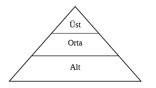

8. BÖLÜM - İŞ YERİNDE KONUŞARAK ZİRVEYE ÇIKIN
EĞER İŞ YERİNDE ZİRVEYE ÇIKMAK İSTİYORSANIZ gereken iki şey vardır.
1) İş yerinde zirvedeki insanlar için neyin önemli olduğunu bilmek zorundasınız.
2) Zirveye çıkmak için insanlarla usta bir şekilde konuşabilmesiniz.
Gerçekte her büyük şirket, güç ve gelir seviyeleri kâğıda döküldüğünde bir piramide benzer. Yapısal olarak konuşmak gerekirse bir piramitte ‘en altta’ çok insan, ortada daha az ama önemli sayıda insan, ‘zirvede’ ise çok az insan vardır.

Soru: Şirketin en altında yaşayan %80’den, ortadaki %15’I geçip en üstteki %5’e nasıl ulaşırsınız? Büyük şirketlerde şirket merdivenlerini tırmanmaya yönelik en önemli atılımların %75’i, bir akıl hocası sayesinde kolaylaştırılmıştır. Başka bir deyişle en alttaki birisi zirvede veya zirveye yakın birisiyle bilerek ilişki kuruyor. Sonra da zirveye yakın kişi piramidin en altındaki kişinin sonraki seviyeye geçmesine yardımcı oluyor. Sizin de zirveye giden bu kanala girmek için zirveden birileriyle iletişim kurabilmeniz gerekiyor. Merdivenin üstlerindekilerle ilişki kurmazsanız sonsuza kadar piramidin en alt kısmında çalışma olasılığınız çok yüksektir.
İş dünyasında şöyle bir deyiş vardır: Ne bildiğiniz değil kimi tanıdığınız önemli. Bu söz kısmen doğrudur. Şirketin başkanını tanıyabilirsiniz fakat onun en çok değer verdiği becerilere sahip değilseniz zirvede hayatta kalamazsınız.
Şirketlerde başarının sırlarını biliyor musunuz? Bu sırların teknik beceri veya özel şirket bilgilerini içerdiği düşünebilirsiniz. Tekrar düşünmeniz gerekecek. Yöneticiler, çalışanlarında görecekleri tek bir kilit beceriyi seçebilselerdi bu hangi beceri olurdu? 1998’de liderlerin çalışanlarında en çok aradıkları Investors Business Daily adlı gazetede incelendi (18 Aralık 1998) ve şu şekilde belirtildi:
Kişisel Bütünlük ve Dürüstlük %16
İnsan İlişkileri %12
Harekete Geçme Odaklı Olma %11
Yaratıcılık %10
Hedef Odaklı Olma %8
Detaylara Dikkat Etme %7
Kararlılık %7
Olumlu Düşünme %7
Vizyon %6
Para Yönetimi %6
Sürekli Öğrenme %5
Zaman Yönetimi %5
Yöneticiler iyi insan ilişkileri olanları açıkça kayırsa da (iletişim, dinleme, gelişmiş etik değerler), çoğu yönetici başka insanlarla ilgilenmek söz konusu olduğunda kendilerini merdivenin zirvesinde ALGILAMAZLAR. Açıkça bu becerileri olan başka insanları takdir ederler. Bu becerileri sahip insanların zirveye çıkmalarını açıkça isterler. Etkin iletişim kurabilen insanlar, yerine koyulması zor insanlardır. Herkes telefona cevap verebilir. Ancak herkes telefonun diğer ucundaki öfkeli müşteriyi yatıştıramaz. Şirketteki herkes ürünler hakkında bilgi sahibidir fakat çok az kişi kendi şirketinin ürünlerini başkalarına satmak için gerekli becerileri o anda açığa çıkarabilir.
Açıkçası işinizde zirveye çıkmak istiyorsanız konuşarak yolunuzu yapmalısınız. Etkin iletişim, iş hayatındaki birçok kişi için başarı ve başarısızlık arasındaki farkı yaratacaktır. Sizi tanıyanlar bir şekilde yukarıda sıralanan özelliklerin sizden yayıldığını görmeye başlamak zorundalar. İşte ilerlemenizi sağlayacak en iyi adımları atmak için gerçekleştirmeniz gereken birkaç kilit fikir. İnsanlar başkalarıyla yaptığınız konuşmalardan bu özelliklere sahip olduğunuzu algılamalıdırlar.
Kişisel Bütünlük ve Dürüstlük
Birinin kişisel bütünlüğe ulaştığını ve tamamen dürüst olduğunu söylediğini hiç duydunuz mu? Bunu duyduktan sonra da o insandan şüphe duyduğunuzu fark ettiniz mi? Neden? Kişisel bütünlük ve dürüstlük kelimeleri o kadar güçlü ki akla hemen zıtlarını getirirler. Bu yüzden insanlar ‘dürüst biri’ olduğunuzu ya da ‘dürüst bir şirket için çalıştığınızı’ söylediğinizi duymamalılar. Kimse ‘şirketinizin bütünlüğü’ hakkında bir şey duymak istemez. Eğer insanları dürüst ve bütünlük içinde olduğunuza ikna etmek istiyorsanız asla bütünlük ve dürüstlük hakkında konuşmayın.
Peki, insanlara yüksek oranda kişisel bütünlüğe sahip dürüst biri olduğunuzu nasıl gösterirsiniz? Başkalarıyla bütünlük içinde ve dürüst olduğunuzu açıkça göstererek iletişim kurmalısınız. Örneğin: “Müdür Bey gelip ne yaptığını neden anlatmadı? Bu yapılması gereken en dürüst hareketti.” Bu yorum, müdürle ilgili kötü hisler beslenmediğini, sadece ondan dürüstçe iletişim kurmasının beklendiğini gösteriyor. “Umarım bir gün doğru şeyi yapmak moda olur.”
İnsanların kişisel bütünlüklerini ve dürüstlüklerini göstermek için yaptıkları harika şeylerle ilgili yorum yapın. Birinin kaybolmuş bir cüzdanı veya çantayı sahibine götürdüğünü duyarsanız ve iş yerinde aynı yerde yemek yiyorsanız başkalarının da bu hareketten etkilendiğinizi bilmelerini sağlayın. Sonra da gerçekten etkilenip etkilenmemeniz gerektiğini yüksek sesle sorgulayın. Ne de olsa bu bekleyeceğiniz şey değil midir?
İnsan İlişkileri
İnsan ilişkileri nedir? İnsan ilişkileri, başkalarıyla etkin iletişim kurma kabiliyetidir. İnsan ilişkileri zor müşterilerle, sorunlu iş arkadaşlarıyla başa çıkmayı ve departmanınızı, ofisinizi, şirketinizi geniş çapta temsil etmeyi içerir.
İnsan ilişkilerini geliştirmek biraz zaman alır. Sosyal insanlar bazen bu tür ilişkilerde doğaldırlar. İnsan ilişkileri diğer insanlarla ilişki kurmak ve sürdürmek için gereken beceriler olarak en iyi şekilde tanımlanır.
Önceki bölümde uyumlu iletişim tarzlarıyla bağ kurmaktan bahsettik. Orada öğrendiğiniz bilgiler size bütün şirket işlerinizde yardımcı olacak.
Eğer ofisinizde, departmanınızda ya da şirketinizde zirveye çıkmak istiyorsanız iş hayatındaki insanlarla uğraşmak ve onlarla etkin şekilde başa çıkmaktan daha önemli bir şey yoktur.
Harekete Geçme Odaklı
İnsanlar sizin ‘harekete geçme odaklı’ biri olduğunuzu nasıl anlarlar? Diğer bütün özellikler gibi bununla da gösteriş yapamazsınız. Bir kez daha günlük iletişiminizde harekete geçmeye yöneliminizi insanlara iletişim kurarak duymalarını sağlamak zorundasınız:
“İnsanların ofis için önemli olacağını bildikleri bir projeye başlamak için son ana kadar beklemeleri beni şaşkına çeviriyor. O zaman da tabii ki zamanında bitiremiyorlar ve diğer projeler de ekleniyor. Ne dediğimi anlıyor musunuz?”
Bu ifadeler, sizin detaylı olarak önceden düşünüp harekete geçme odaklı düşünceye katıldığınızı gösterir. İşte aşağıda başka bir örnek...
“Bir keresinde ofiste her birimizin yirmi telefon görüşmesi yapmasına izin verildiğini hatırlıyorum. Ben bu görüşmelerin hepsini istiyordum çünkü gerçekten telefona çıkıp mümkün olduğunca çabuk müşterilerin karşısına çıkan biriydim. Bunu geciktirmenin çok kötü sonuçlanacağını fark edebilmiştim.”
Yaratıcılık
Yaratıcılık, ürün geliştirmede, problem çözmede ve her şeyi tek gecede değiştirmeyen bir şeye hareketlilik kazandırarak geliştirmek için eski fikirleri ele almada çok önemlidir. Genelde şirketinizin yerini değiştirmeyi tavsiye etmeden, bir şeyi büyük oranda değiştirmeden ya da giyim tarzını çok fazla değiştirmeden önce insanların sizdeki yaratıcılığı görmeleri en iyisidir. Yine de şirket içinde küçük değişiklikler yapmaya başladığınızda vizyon sahibi biri olarak görülmeye başlarsınız.
Başkalarıyla iletişim kurarken benzer bir durumda başka bir şirketin ne yaptığına bakın ve o fikrin ardındaki yaratıcı hakkında yorumda bulunun. Bu, başkalarının sizin de yaratıcı görevini üstlendiğinizi ve ofisinizde benzer bir durum yaşandığında başvurulacak kişi olduğunuzu görmelerini sağlar.
Hedef Odaklı
Söylemedikleriniz, hedefler ve stratejik düşünce söz konusu olduğunda çok büyük önem taşıyabilir. Hedeflerinizden ve onlara ulaştığınıza dair hikâyelerden bahsetmezseniz birisi sizin hedef odaklı olduğunuzu nasıl anlayabilir? Derinlemesine düşündüren bir soru sormayı tasarlayın.
“Şirketin bu yılki büyüme hedefi nedir?”
“Bu ayki satış hedefimiz nedir?”
“Şirket bu çeyrekte hangi oranda kâr etmemizi istiyor?”
“Hisselerimizin %10 artması için ne yapmak gerekiyor?”
Bu soruların hepsi bir hedefe yönelim gösteriyor. Peki soruları soramazsanız ne olur? O zaman ne yapacaksınız? Zig Ziglar’ın hedef programının bir kopyasını masanıza koyun. Yürürken masanıza baktıklarında herkesin görmesi için ‘tamamlanmış’ projelerinizin yazdığı bir günlük plan veya ajanda koyun. Hedef odaklı olduğunuzu ve aktif şekilde hedefler belirleyip bunlara ulaştığınızı insanlar bariz anlamalı. Bazen hareketler sözlerden daha etkilidir.
Telefon görüşmeleriniz dinleyiciye gösteriş yapıyormuşsunuz gibi gelmeden telefonda hedeflerinize ulaştığınızdan ve hedef koyduğunuzdan bahsederken insanların duymalarını sağlamak akıllıca olabilir.
Detaylara Dikkat Etmek
Toplantı gündemini herkese dağıttıktan sonra fazladan kopyasının olmasına dikkat eder misiniz? “Herkeste var mı? İsterseniz iki tane daha var.” Herkese yetecek kadar ve daha da fazlasını kesin bulunduracak kadar önceden düşünebildiniz demektir. Çoğu insan bunu yapmaz. Yaptığınız küçük şeyler etkilemek istedikleriniz için çok önemlidir.
Bir sonraki strateji toplantısı için bir öğle yemeği mi düzenliyorsunuz? Vejetaryen olanların ve özel yemek ihtiyaç duyanların yiyeceklerinin kontrol edildiğinden emin oldunuz mu? İnsanlar bu tarz detaylara dikkat edildiğini fark ederler. Fazladan bir-iki dakika alan bir şey bize bir hayat boyu fayda sağlayabilir. İnsanlar, fazladan düşünülüp küçük şeylere dikkat edildiğinde onları takdir ederler.
Toplantının ardından birkaç kişiyle birlikte ofiste kaldıysanız durmayın, ortalığı toplayın. En son gidenlerden olun. Hatta tahtayı silip toplantıdaki faks notlarına dair ofise geldiğinizde doğru kişilere notlar yazın. Küçük yorumlar ve ekstralar iyi bir izlenim oluşturur.
Detaylara dikkat ederken ana tabloya önem veren insanların biraz sonra asıl konuya dönüp işlerin yürümesini sağlayacağınızı bildiklerinden emin olun. Ana tabloya önem veren insanlar önce sormazsa onları detaylarla sıkmayın.
Kararlılık
Eğer yanan bir binada içeride kalan çocuğun anne-babasıysanız bebeğinizi oradan çıkarmanın yolunu bulurdunuz; hem de çok hızlı. İşte kararlılık budur. Kararlılık bir şeyi tekrar tekrar yapıp sonuçta aynı başarısızlığı elde etmek değildir. Bu çılgınlıktır. Kararlılık, bir şeyi doğru ve kazançlı hale gelene kadar yapabilmektir. Kararlılık fayda sağlar.
Sözsüz iletişiminizle ve başkalarının sahip olduğu, siz de aynından bulunan ama bahsetmediğiniz özellikleri takdir etmeniz aracılığıyla başarı kazanana kadar başkalarıyla kararlılık kabiliyetinizi konuşun.
“Piyasada kalıp yatırım planlarına bağlı kalan insanlar, sürekli bir oraya bir buraya atlayanlara oranla çok daha kazançlı çıkarlar.”
“Matematiksel olarak konuşmak gerekirse, kararlılık genelde fayda sağlar çünkü işe yaramayan stratejileri tükettiğinizde işe yarayanlar eninde sonunda yüzeye çıkacaktır. Hayatta herhangi bir konuda başarılı olmak için dahi olmak zorunda olup olmadığınızı bilmiyorum ama kazanana kadar bir şeye bağlı kalmak zorundasınız.”
İş arkadaşlarınızın ve üstlerinizin kazanan biri gibi konuşmanıza ihtiyaçları vardır. Kaybedenler başarısızlıktan ve vazgeçmekten bahsederler. Bir kez bir şey denemişlerdir ve işe yaramamıştır. Kaybedenler böyledir. Asla uzun süre kaybeden biri olmayın çünkü başarı kazanana kadar kararlı olacaksınız. Hiç kimseye hiçbir zaman hayır demeyeceğinize rağmen insanlar, kararlı olanları takdir ettiğinizi duyacaklar ve sizin de o grupta yer aldığınızı bilecekler.
Olumlu Düşünme
Bazı yöneticiler yüzünüzde her zaman gülümseme olmasını ve başarı kazanana kadar bu sahte gülümsemeyi koruyan, Pollyanna tavırlı insanları severler. Bu bazı şirketlerde faydalı olabilir ama hepsinde olmaz. Olumlu düşünen bir insan proje kötüye gittiğinde kötümser şeyler söylemeyendir. Bir şey yanlış gittiğinde olumlu düşünen kişi, “Bir şey yanlış gitmiş olmalı. Acilen onu düzeltmeliyiz” der. Kötü deneyimlerin ders niteliği taşıdığı ve başarısızlığın da bir çeşit geri bildirim olduğunu söylemenin pek faydası yoktur. (Bunu uçağı düşüren pilota söyleyin.) Olumlu düşünce, ‘bizi hiçbir şey durduramaz’ tavrıdır.
Muriel Siebert and Company, büyük bir finansal dergi tarafından ülkedeki üçüncü en iyi borsa şirketi seçildi. (Şirket Jack White ve Waterhouse tarafından ileri götürülmüştür.) Siebert’ın doğru yaptığı şey, bütün yeni reklamlarını şirketin üçüncü olmasının ve çalışanlarının bundan gurur duymasının üzerine kurmaktı. Mahalledeki bir kadın tarafından yönetilen tek borsa şirketi çok ilerlemişti ve o kadın büyük oyuncular arasında üçüncü olmaktan gurur duyuyordu. Olumlu bir tavır, kişisel olarak ve televizyon reklamlarında fayda sağlar.
Kimse sizin olumlu tavrınız hakkında gösteriş yaptığınızı duymak zorunda değil. Kimse sizin bir gün her şeyin ne kadar da parlak olacağına dair pembe hayallerinizi duymaya ihtiyacı yok. Duymak istedikleri şey, hayatın ve iş dünyasının önünüze koyduğu engellere nasıl cevap verdiğinizdir. Engeller sonsuza kadar mı sürer, yoksa tünelin sonunda ışık var mıdır? Sonunda kazanır mısınız, yoksa her şey bitmiş midir?
Vizyon
Bireysel geleceğinize ve şirketinizinkine dair vizyonunuzu çalışanlarla konuşma yeteneğine sahip misiniz? Özellikle gelecek vizyonunuz, şu ankinden büyük oranda farklı olan bir pozisyonu içeriyorsa geleceğinizi şirkettekilerle görüşürken dikkat etmek her zaman iyidir. Bir şirketin geliştirme bölümünde görev aldığınızı ve sürekli satış-pazarlama bölümündeki geleceğinizden bahsettiğinizi düşünün. Şu anki pozisyonunuzdan hiç memnun olmadığınız algılanabilir. Bu paradoksla nasıl başa çıkacaksınız?
“Satış ve Pazarlama bölümünün biraz yaratıcı desteğe ihtiyacı var. Biz dünyadaki en iyi ürünleri oluşturuyoruz ve yine de geçen yıl yaptıklarını satıyoruz. Bunu düzene koymazlarsa oraya gideceğim ve ürünlerimizi satacağım.”
“Bu yazılımı geliştirmek için altı yıl harcadıktan sonra dünyaya bundan bahsetme fırsatını yakalamak isterim. Burada yaptığımız hiçbir şeyden bu kadar gurur duymamıştım.”
“Bu şirketin yalnızca büyüyüp genişlediğini değil endüstride itici güç olduğunu görebiliyorum. Bence sektördeki diğer şirketler azalmaya başladıkça biz bir numaraya çıkacağız çünkü...”
“Kendimi, gelecekte karşıma çıkan her departmana yardım ederken görebiliyorum. Şimdi zamanımı buraya harcamak istiyorum. Sonraki aşamada kendimi pazarlamada görebiliyorum. Şirkette uzun süre kaldıkça finans bölümüne geçebileceğimi düşünüyorum.”
Temel fikir, bireysel ve şirket bazında gerçekleşen büyümeyi görmeniz ama mevcut durum hakkında çok sıkıntılı ve üzgün görünmemenizdir.
Para Yönetimi
Tutumluluk için gereken her şeye sahip misiniz? Harcanan her kuruş daha fazla miktarda parayı teşvik etmelidir. Tabii bazı para yönetimi alanlarının ölçülmesi zordur. Günün sonunda ışıkları söndürmenin veya yeni bir bilgisayar almak yerine PC’nizi iyileştirmenin değerini, maliyetini ve tasarrufunu herkes hesaplayabilir. Yine de bir seminere katılmanın veya şirketinize konuşmacı getirmenin maliyetini nasıl hesaplarsınız? Peki basit ödüller ve plaketlerden, müsabaka ve gemi yolculuğu veya seyahat yarışmalarına kadar değişen, çalışanları teşvik etme programlarının maliyeti nasıl anlaşılır? Ne kadara mal olurlar?
Genel olarak konuşmak gerekirse işlerinden memnun çalışanlar diğerlerinden iyi performans sergilerler. İşlerinden memnun çalışanların iş dünyasındaki birçok kişinin küçümsediği ama gerçek bir masraf kalemi olan hastalık izni aldıkları günler daha azdır. Şirketinizdeki hastalık izinlerini %10-50 arası azaltabilseydiniz ne olurdu? Dışarıdan eğitimciler, konuşmacılar getiren ve çalışan teşvik programlarına katılan şirketlerin daha az hastalık izni kaydı bulunduğunu biliyor muydunuz? Bunun bir şirket için maliyeti nedir?
Nazik ama kesin bir şekilde bu konseptlerin farkında olduğunuza dair iletişim kurma yeteneğiniz, paranın değerini anladığınızı gösterir. Çoğu çalışanın yalnızca para değil işlerinden zevk almak istediklerini gösteren araştırmaları şüphesiz ki okumuşsunuzdur. Sizin bariz para biriktirme ve para kazanma stratejilerinin farkında olduğunuzdan bahsetme yeteneğiniz, şirketiniz için önemli olan şeylere dair bir anlayışınız bulunduğunu gösterir. Müşteri hizmetleri gereklidir. En iyi kalitede ürünler gereklidir. Kâr sağlayan bir şirketin amacı yine kâr sağlamaktır. Kâr sağlamayı önemseyen insanlarla bu şekilde konuşursanız çok yakında zirvede oturursunuz. Eğer doğru insanların ofisinizi döşerken bütçeyi aşmadığınızı ve genel fona ekleyecek fazladan para bulmanın yolunu bulduğunuzu görmelerini sağlarsanız kesin kazanan biri olarak tanınırsınız. Çoğu insan kendilerine verileni sonuna kadar harcarlar. Siz öyle yapmayacaksınız. Siz para yöneticisisiniz. Siz şirketiniz için, aynen aileniz için bir ev ya da araba alıyormuşsunuz gibi daha iyi fiyat alacaksınız.
Sürekli Öğrenme
İşte ortalama çalışan, ortalamadır. Zirveye çıkan insanlar sürekli öğrenmeye dâhil olan insanlardır. Kitap okurlar, ders alırlar, seminerlere giderler ve şirketlerinde bazı alanlarda özellikle insan ilişkilerinde en bilgili insanlar haline gelirler. Sürekli öğrenmeye yönelik ilginizi bunu önemseyen insanlarla nasıl konuşuyorsunuz?
“Satış konusunda her zaman iyi olmuşumdur. Bence bu konuşmacıyla bir gün geçirmek, her çeyrekte bir ya da iki satış olarak bana geri dönecek. Ayrıca gelişmiş satış tekniklerinde bir ya da iki çok önemli nokta öğrenmemi sağlayacak. Bu kursa gitmemi onaylamanızı istiyorum.”
“Müşteri hizmetlerinin şirketin çok önemli bir kısmı olduğunu her zaman söylersiniz. Kötü müşteri hizmetleri kazançlarınızın kapıdan çıkıp gittiğini görmek gibidir. Bu iki günlük kurs, IBM, Microsoft ve Netscape’deki en iyi insanların yatırım yaptığı bir kurs. Onlar kadar veya onlardan daha iyi olmak istiyorum. Gidebilmem için ayarlama yapabilir miyiz?”
İletişiminiz, sürekli olarak iş yerinde kullanabileceğiniz yeni bilgiler öğrenmeye yönelik isteğinizi gösterebilir. Sırf öğrenmiş olmak için öğrenmek iş dünyasında iyi görülmez. İş yerinde karlı uygulamalar yapmak için öğrenmek, zirvedeki insanların duymak istedikleri şeydir.
Öğrenme isteğinizle ilgili iletişim kurmanın yanlış bir yolu var mıdır? Elbette vardır. Eğitimsiz veya ileri eğitime çok muhtaçmış gibi görünerek çabalarınızın boşa gitmesini sağlayabilirsiniz. Her zaman önce ne söyleyeceğinizi düşünün, sonra dile getirin. Kendinize sormak isteyeceğiniz soru şudur: Muhtaç mı, en iyi 20’den en iyi 5’e doğru geçecekmiş gibi mi görünüyorsunuz?
Zaman Yönetimi
İletişiminiz bir aciliyet belirtmemelidir. Zamanı sürekli dar olan insanlar meşgul insanlardır ama bu başkalarına düzensizlik olarak görünür. Yine de iletişiminiz, meşguliyetinizi ve bütün önemli işlerinizi başarmaya devam ettiğinizi göstermelidir. Bütün iletişimlerde olduğu gibi hareketleriniz ve sözleriniz de insanların sizi kazanan ya da başarısız biri olarak gördüğünü belirleyecektir.
Zirvedeki insanlarla başa çıkmanın veya zirveye daha da yakın olmanın bir yolu da bu insanların zaman yönetimindeki değerlerini keşfetmektir.
“Aynı anda üç-dört önemli proje arasında kaldıysanız ne yapacağınızı bulmanıza ne yardımcı olur?”
Bu durumda tavsiye isteyen bir acemi gibi görünmezsiniz. Zaman yönetiminde yer alınacak en iyi safı belirlemede bir uzmanın stratejisini ortaya çıkarıyorsunuz. Zirvedeki insanlarla kurduğunuz her tür iletişimde olduğu gibi muhtaç görünmek istemezsiniz. Zirvedeki %5 için son ipuçlarını arayan, zirvedeki %10 veya 20 gibi görünmek istersiniz.
Zaman yönetimi çok önemli bir beceridir. Zaman yönetimi şirketlerde herkese öğretilmelidir. Yine de öğretilmez ve bu yüzden birçok insan küçük şeylerde ustalaşır, şirkette altlara doğru kayar ve şirketten ayrılacak şekilde çalışır. İşinizi ve zamanınızı yönetmeyi öğrenerek siz farklı olabilirsiniz.
Şimdi şirkette zirvedeki insanların ne aradığını biliyorsunuz. Gelelim kişisel ve mesleki hayatınızda mükemmel bir iletişimci olmak için gereken bu özel becerileri nasıl geliştireceğinize...